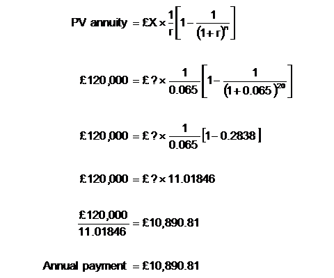
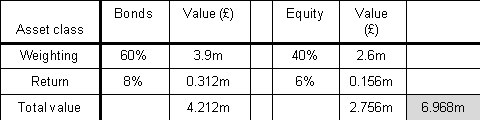
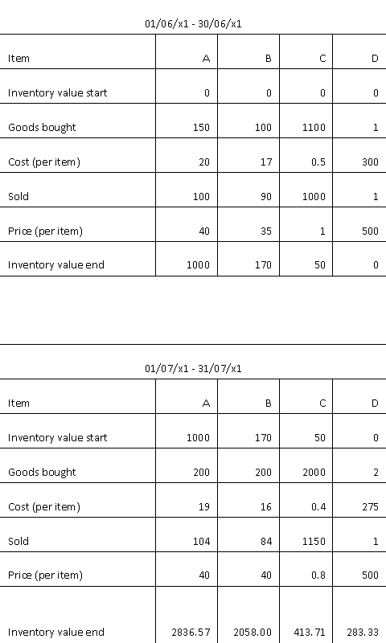
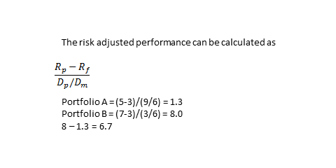
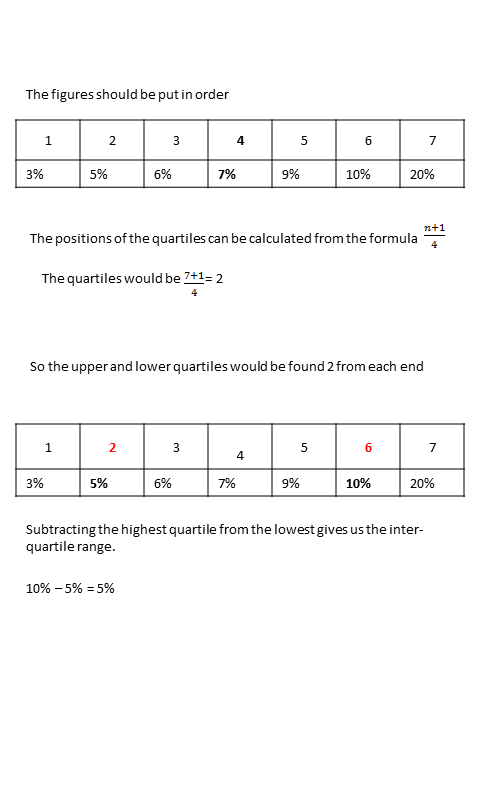
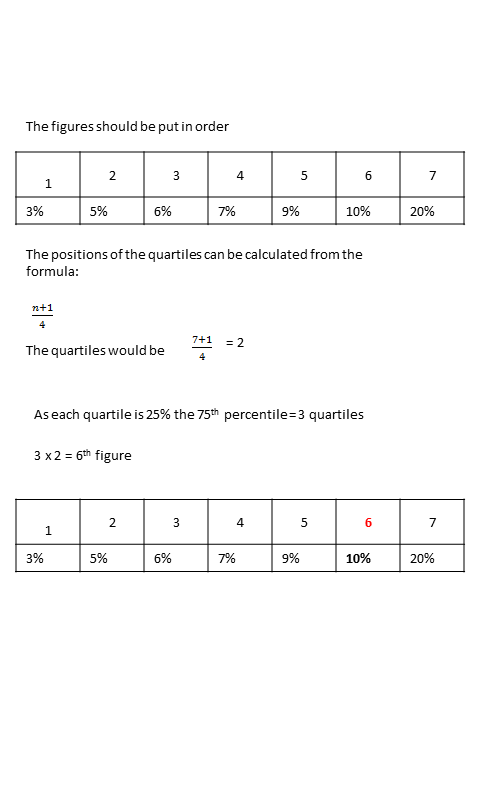
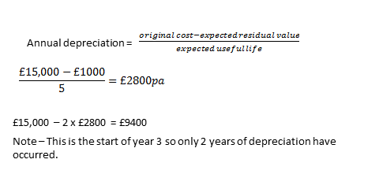
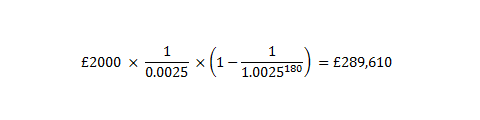
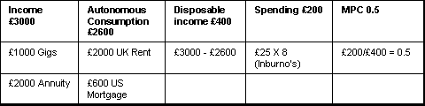

Practice Mock Exam
Question 1
[1001141]
If free float increases from 80% to 100%, what is the % increase in market capitalisation?
A
0%
B
20%
C
25%
D
80%
The correct answer is: A - 0%
Explanation
Free float is the percentage of shares held by the public.Question 2
[1001246]
Which of the following is true of call options but not true of warrants?
A
They are right to buy shares
B
Shares are bought at a strike price
C
On exercise they do not dilute the shareholding
D
They are issued by the company whose shares they are
The correct answer is: C - On exercise they do not dilute the shareholding
Explanation
The exercise of a warrant leads to new shares being delivered to the holder, whereas the exercise of a call option leads to existing shares being delivered.Question 3
[1001300]
A 10.25% gilt has 18 months until redemption and a flat-yield of 10.5% What will be its price?
A
£89
B
£98
C
£102
D
£103.50
The correct answer is: B - £98
Explanation
With a price of £98, flat-yield = £10.25/10.5%=£98Question 4
[1001302]
All of the following securities have the same coupon. If interest rates were to drop by 1%, which security's price would move most?
A
Floating rate gilt
B
Short-dated gilt
C
Medium-dated gilt
D
Long-dated gilt
The correct answer is: D - Long-dated gilt
Explanation
Longer-dated securities are more volatile than shorter-dated ones. This is reflected by the 'pull to redemption'.Question 5
[1001376]
All of the following are intangible non-current assets except:
A
Goodwill
B
Brands
C
Development costs
D
Share premium
The correct answer is: D - Share premium
Explanation
Share premium forms part of shareholders' funds. An example of 'development' costs would be the costs incurred in developing a new drug prior to its commercial production.Question 6
[1001392]
Which of the following statements is most likely to be FALSE regarding a company with a low P/E ratio relative to its sector?
A
The market perceives it to have low growth prospects
B
It might be regarded as being more risky than its sector
C
It is perceived to be under-performing by investors
D
It is likely to have a low dividend yield
The correct answer is: D - It is likely to have a low dividend yield
Explanation
The P/E ratio and dividend yield tend to have an inverse relationship: i.e. a company with a relatively low P/E ratio will tend to have a high dividend yield. A company that pays most of its profit out as dividends (and therefore has a high dividend yield) will not have much profit to reinvest for future growth (and thus has a low P/E).Question 7
[1001395]
The following information relates to Alaska plc: profit after interest, tax and extraordinary items £5m; called-up share capital £15m (ordinary shares of 50p each); current market price per share 100p. What is Alaska plc's P/E ratio?
A
2x
B
4x
C
6x
D
8x
The correct answer is: C - 6x
Explanation
Number of ordinary shares = £15m / 0.5 = 30m. Earnings per share = £5m / 30m = 16.6p. P/E = 100p / 16.6p = 6x.Question 8
[1001403]
For its most recent financial year XYZ plc paid net dividends per share of 10p. If EPS was 25p, what was XYZ plc's dividend cover?
You should answer this question using the following format 0.0
The correct answer is: 2.5 - 2.5
Explanation
Dividend cover = Earnings per share / Dividend per share Dividend cover = 25p / 10p = 2.5x.Question 9
[1001710]
Sterling is quoted at a $1.4735-1.4770 spot. The one-month forward is quoted at a premium of 15-10 pips. How much in US dollars will it cost to buy £100,000 for settlement in one month?
You should answer this question by typing in the following format without symbols: 0,000
The correct answer is: 147,600 - 147,600
Explanation
The spot rate is $1.4735-1.4770 and the forward rate adjustment is 15-10. The forward 'premium' tells us to deduct the adjustment from the spot rate, bu t even without the word premium, we know that in order to widen the spread in the forward rate, we would deduct the adjustment. Having deducted the premium, the one-month forward rate is $1.4720-$1.4760. We wish to buy the base currency; the quoting bank will therefore deal at its offer $1.4760. £100,000, and will therefore cost 100,000 x 1.4760 = $147,600.Question 10
[1006854]
If an investor wishes to profit from a view that the market will remain stable (low volatility) over the short term, which of the following strategies will maximise profits?
A
I and II
B
II and III
C
III and IV
D
II and IV
The correct answer is: B - II and III
Explanation
If an investor wishes to profit from a view that the market will remain stable over the short term he would write a straddle and/or write a strangle.Question 11
[1010951]
What is the meaning of the term open-ended investment?
A
The investor may hold the investment for any term
B
The fund has no fixed expiry date
C
Potentially unlimited profits are possible
D
The manager may issue/buy back units as required
The correct answer is: D - The manager may issue/buy back units as required
Explanation
New units can be created upon demand, or cancelled by the fund.Question 12
[1012989]
Which of the following are characteristics of companies offering life assurance, rather than general insurance?
A
II and III
B
II only
C
I and III
D
I and II
The correct answer is: B - II only
Explanation
Life assurance funds cater for LONG term liabilities - a higher proportion of equities is therefore more suitable.Question 13
[1013001]
A repayment mortgage of £120,000 is taken out over 20 years. What is the annual repayment required at the end of each year if the rate of interest is fixed at 6.5%?
You should answer this question by typing the correct numbers in the following format without symbols: 00,000.00
The correct answer is: 10,890.77 - 10,890.77
Explanation
A mortgage is simply an annuity;
Question 14
[1013006]
A fund has a TWRR of 20%. The value at the end of year 1 is £140.00. £20.00 invested mid year resulted in the fund's value being £127.00. What was the start value of the fund?
A
£89.29
B
£98.29
C
£120.10
D
£130.10
The correct answer is: B - £98.29
Explanation
We need to know the value of the fund at T0. TWRR (20%) = [ (107 / ? x 140 / 127) -1 ] x 100 Therefore ? can be solved as £98.29.Question 15
[1013017]
The balance sheet of a company shows the following at the end of the first year:
Ordinary share capital £50,000
Share premium account £25,000
and the following the next year:
Ordinary share capital £75,000
Share premium account £0.00
Which of the following has happened during the intervening year?
A
1:1 Scrip issue
B
1:2 Scrip issue
C
1:1 Rights issue
D
1:2 Rights issue
The correct answer is: B - 1:2 Scrip issue
Explanation
There has been no net inflow of cash into the company - the total of the two accounts was £75,000 before and after the event. This implies that a bonus and not a rights issue has taken place. The ordinary share capital account has increased by £25,000, which means the company has issued half as many shares as it had originally i.e. a 1:2 scrip or bonus issue.Question 16
[1013019]
Which of the following central banks have independence when setting interest rates?
A
I and II
B
I and III
C
II and III
D
I, II, and III
The correct answer is: D - I, II, and III
Explanation
The Bank of England attained interest rate independence with the Bank of England Act 1998.Question 17
[1013022]
A production function:
A
Specifies the level of output to maximise profits
B
Specifies the maximum output that may be produced from any given amount of input
C
Specifies the minimum output to maximise profits
D
Specifies the average output needed to maximise profits
The correct answer is: B - Specifies the maximum output that may be produced from any given amount of input
Explanation
The production function is the relationship between input and output. Specific levels of output with regard to profits are obtained from various cost curves.Question 18
[1013027]
A company's convertible debt has a par value of £500. The conversion ratio is 40 shares. If the market value of the company's shares is £5.40 what is the conversion value of this convertible issue?
A
£7.41
B
£12.50
C
£15.50
D
£216.00
The correct answer is: D - £216.00
Explanation
The conversion value of a convertible issue (as opposed to its conversion premium) is calculated as: Conversion value = conversion ratio x current share price = 40 x £5.40 = £216.00Question 19
[1013030]
The sample standard deviation of a series is:
A
The square of the sample variance
B
The sample variance divided by the number of values in the series
C
The sample variance divided by the number of values in the series minus one
D
The square root of the sample variance
The correct answer is: D - The square root of the sample variance
Explanation
The standard deviation is defined as the square root of the sample variance.Question 20
[1013034]
Which of the following is/are true regarding unit trusts?
A
I and II only
B
I and III only
C
II and III only
D
I, II and III
The correct answer is: D - I, II and III
Explanation
Unit trusts must invest in at least 16 different companies' securities and must not own more than 10% of any one company. The fact that investors may buy and sell units at anytime with the fund manager means that the amount of money available to the fund manager varies from day to day: the fund manager needs to take this into account when buying investments.Question 21
[1013038]
Which of the following are primary factors in determining whether an index tracking fund has met its targets?
A
I only
B
II only
C
I and II only
D
I, II and III
The correct answer is: B - II only
Explanation
Apart from tracking error, the costs of managing the fund would be taken into account also.Question 22
[1013039]
An investment strategy that is passive usually means:
A
The trustees do not usually evaluate the performance of the fund manager
B
The trustees take NO part in the management of the fund at any stage
C
The fund manager is trying to identify and acquire undervalued stocks
D
The fund manager is seeking to track a benchmark index having determined the preferred level of risk of the client
The correct answer is: D - The fund manager is seeking to track a benchmark index having determined the preferred level of risk of the client
Explanation
Passively managed funds are usually tracker or index funds. The fund manager is not trying to choose cheap stocks, but instead looking to mimic the performance of a particular index that reflects the required risk level of the customer.Question 23
[1013042]
Consider the following: capital markets are in equilibrium, according to the CAPM, if the risk free rate of return is 3% and the expected return to the market is 11%, what is the expected return to a portfolio with a beta of zero?
A
0.0%
B
3.0%
C
5.0%
D
11.0%
The correct answer is: B - 3.0%
Explanation
Using the CAPM formula:Question 24
[1013043]
The time weighted annual rate of return to a fund is 15%. The return to the market over the same period is 14%, assuming risk exposure is the same, this implies:
A
The fund has been well managed
B
The fund has been poorly managed
C
It is impossible to gauge the fund's performance without more information
D
The fund must have a beta less than 1
The correct answer is: A - The fund has been well managed
Explanation
The time weighted rate of return is higher than the return to the market. The fund has therefore been well managed.Question 25
[1013044]
An investor buys a property for rental purposes and pays £100,000 for it. A year later the property is sold for £110,000 having received rental income of £6,000 (received at the year end). If the investor paid £600 in taxes and £2,000 in commissions, what annual rate of return has the investor received?
A
12.18%
B
13.4%
C
14.6%
D
16.00%
The correct answer is: B - 13.4%
Explanation
The investors return is the capital gain plus income (£10,000 + £6,000 = £16,000) less tax and commissions (£600 + £2,000 = £2,600): £16,000 - £2,600 = £13,400 giving a return on the initial investment of £13,400/£100,000 = 13.4%.Question 26
[1013049]
Assuming risk free assets yield 4%, which of the following portfolios gives the greatest excess return measured on a total risk basis?
A
Return 5%, standard deviation 1.0, beta 0.4
B
Return 7.5%, standard deviation 3.0, beta 0.5
C
Return 10%, standard deviation 3.5, beta 1.2
D
Return 12%, standard deviation 6.0, beta 2.0
The correct answer is: C - Return 10%, standard deviation 3.5, beta 1.2
Explanation
Use the Sharpe ratio to calculate the highest return for total risk (NB the betas are a red herring):
Question 27
[1013050]
An investor can choose between the following four diversified portfolios. If the risk free return is 4%, which portfolio should the investor choose?
A
Return = 12%, beta = 1.2
B
Return = 11%, beta = 0.9
C
Return = 10%, beta = 1.3
D
Return = 12%, beta = 0.9
The correct answer is: D - Return = 12%, beta = 0.9
Explanation
Assume that the portfolio will achieve its return, then measure which is the best using the Treynor measure.Question 28
[1013052]
Calculate the arithmetic mean for the following series of equity returns:
8% 9% -6% 3% 12% -30%
A
- 0.52%
B
- 0.67%
C
- 1.02%
D
- 1.86%
The correct answer is: B - - 0.67%
Explanation
Simply add up all of the returns and divide by the total number of returns: (8 + 9 - 6 + 3 + 12 - 30) / 6 = -4 / 6 = -0.666 or - 0.67.Question 29
[1013054]
Which of the following contribute to the inelasticity of supply in the property market?
A
I and II
B
I and III
C
II and III
D
I, II and III
The correct answer is: C - II and III
Explanation
Planning controls limit the supply of land available for development. Geographic immobility means that houses in one part of the country where there is a surplus cannot be moved to another part where there is a shortage.Question 30
[1013057]
Consider two put options with different strike prices. The option with the lower strike price will normally:
A
Have the higher premium
B
Have the lower premium
C
Have greater volatility
D
Both options will have the same premium
The correct answer is: B - Have the lower premium
Explanation
A put option is the right to sell. At any given time the option with the higher strike price will be more valuable. Volatility is a characteristic of the underlying asset.Question 31
[1013063]
Alaska plc has a corporate structure which consists of ordinary shares, cumulative preference shares and deferred shares. Which of the following would be the order of repayment in the event of liquidation?
A
Cumulative preference shares then deferred shares then ordinary shares
B
Deferred shares, cumulative preference shares then ordinary shares
C
Ordinary shares, deferred shares then cumulative preference shares
D
Cumulative preference shares, ordinary shares then deferred shares
The correct answer is: D - Cumulative preference shares, ordinary shares then deferred shares
Explanation
Deferred shares are shares that rank below ordinary shares. They are sometimes held by the founders of the company.Question 32
[1013064]
A fall in aggregate demand may be caused by :
A
A fall in market prices
B
A decrease in the number of unemployed
C
An increase in exports
D
A fall in government expenditure
The correct answer is: D - A fall in government expenditure
Explanation
Aggregate demand is the sum total of demand in an economy. If the unemployment rate went down, aggregate demand would rise (more people would have jobs and hence more money to spend). If exports increased output would have to rise to meet it causing an increase in aggregate demand. Falling market prices are a cause of RISING aggregate demand.Question 33
[1013071]
A company has sales revenue of £120,000. Cost of sales were £60,000, other expenses £20,000 and interest charges of £18,000. Calculate the pre tax profit margin.
A
6.4%
B
18.3%
C
23.3%
D
33.3%
The correct answer is: B - 18.3%
Explanation
To calculate the pre-tax profit margin subtract all the expenses from the revenue, and then express this as a percentage of revenue:
Question 34
[1013077]
A portfolio achieves the following quarterly returns:
3% 5% 6% -8%
If the value of the fund at the start was £10,000,000, what was the value at the end of the year?
A
£10,349,376
B
£10,546,788
C
£10,600,000
D
£10,983,736
The correct answer is: B - £10,546,788
Explanation
Simply compound each quarter in turn: 10m x 1.03 = 10,300,000 10.3m x 1.05 = 10,815,000 10.815m x 1.06 = 11,463,900 11,463,900 x 0.92 = 10,546,788Question 35
[1014259]
The shares of a plc stand at a 50% premium to net asset value per share. The company has 100m shares and the share price is 220p. What are the net assets?
A
£73.5m
B
£440m
C
£110m
D
£146.7m
The correct answer is: D - £146.7m
Explanation
If share price is at a 50% premium to net asset value, then net asset value must be 100 / 150 (or 2 / 3) of share price. 220p x 2 / 3 = 146.7p = £1.467 £1.467 x 100m shares = £146.7m.Question 36
[1014796]
Which ONE of the following is NOT TRUE of warrants?
A
They form part of the ordinary share capital of the company
B
They can be issued with loan stock or separately
C
They can have both intrinsic value and time value
D
Time value will fall to zero as they approach expiry
The correct answer is: A - They form part of the ordinary share capital of the company
Explanation
On exercise the investor will receive shares which are then part of ordinary share capital.Question 37
[1014831]
Which ONE of the following is the best approximation of the Gross Redemption Yield of an 8% two year gilt with a current price of £103?
A
7%
B
8%
C
8.7%
D
10%
The correct answer is: A - 7%
Explanation
You are not required to be able to calculate the GRY for the securities exam. However you are expected to be aware that the GRY is calculated by taking into account the flat yield and the gain or loss on redemption. 1 As the gilt is trading above par, the investor would make a loss on redemption - therefore the GRY will be less than the flat yield. The flat yield on this gilt is 7.8% - therefore the GRY must be less than 7.8% - so A is the only possible answer.Question 38
[1014837]
Which of the following should happen when a credit rating on a bond goes down by a "notch"?
Assume all other things being equal.
A
I and III only
B
II and III only
C
I and III only
D
II and IV only
The correct answer is: B - II and III only
Explanation
A credit downgrade will generally result in the bond's price falling and cause the yield to increase. Price and yield are inversely related.Question 39
[1014847]
What best describes the effect on the balance sheet of a 1:1 bonus issue?
A
Share Capital remains constant; reserves increase
B
Share Capital decreases; reserves increase
C
Share Capital increases; reserves increase
D
Share Capital increases; reserves decrease
The correct answer is: D - Share Capital increases; reserves decrease
Explanation
The share capital accounts are calculated by multiplying the number of shares by their nominal value. Therefore as the number of shares increases, the share capital account increases. As the net assets and shareholders' funds remain unchanged, the opposite entry is to reduce the profit and loss account (effectively funding the increase in the share capital) - this means that reserves are reduced. The share premium account can also be used for this purpose.Question 40
[1016994]
A share is trading at 150p. The premium of the 130 call is 50p. What is the time value of this option?
A
50p
B
30p
C
20p
D
10p
The correct answer is: B - 30p
Explanation
Premium = Intrinsic value + Time value Intrinsic value of a call = Asset value - Strike = 150p - 130p = 20p Therefore time value = 50p - 20p = 30p.Question 41
[1017570]
Bud Fox is a UK equity fund manager specialising in blue chips. His forecast for the near future is not good and he anticipates a substantial fall in the value of the UK equity market. Which of the following derivative strategies would be appropriate?
A
Sell a put option
B
Buy a call option
C
Sell a FTSE 100 Future
D
Buy a FTSE 100 Future
The correct answer is: C - Sell a FTSE 100 Future
Explanation
Sell a FT100 Future - if market falls he wins on the future.Question 42
[1018965]
Increases in which of the following indicators are regarded as predictors of the level of business activity?
A
Personal incomes
B
Building permits
C
Corporate profits
D
Levels of inventories
The correct answer is: B - Building permits
Explanation
Increases in building permits are indicative of increased, future business activity and therefore are considered a leading economic indicator. Increases in personal income and corporate profits reflect current, not future, activity and are therefore considered coincident indicators. Increases in inventories indicate that goods are not being sold in anticipated quantities and functions as a disincentive to manufacturing. Buildup in inventories is a lagging economic indicator.Question 43
[1020467]
Which ONE of the following is TRUE in respect of a bonus issue?
A
The number of shares in the company will increase
B
The share price will stay the same
C
The share price will increase
D
The nominal value will change
The correct answer is: A - The number of shares in the company will increase
Explanation
The number of shares in the company will increase. The value of the company is unchanged and therefore the share price will fall.Question 44
[1024205]
Money market funds would invest in which of the following?
A
Gilts
B
Treasury bills
C
Equities
D
Warrants
The correct answer is: B - Treasury bills
Explanation
Money market funds invest in cash and near cash instruments such as Treasury bills.Question 45
[1039445]
Good Company plc has 10,000 shares in issue. It then performs a rights issue, where 10,000 new shares enter circulation.
Your client buys 1,000 of Good Company plc ex-rights shares. What percentage in the company does he own?
A
1%
B
5%
C
10%
D
20%
The correct answer is: B - 5%
Explanation
The shares have gone ex-rights by the time your client has bought the shares, so he cannot take advantage of the issue. This means he hold 1,000 shares of the 20,000 shares in the company, or 5%.Question 46
[1039455]
Which of the following is an example of capital expenditure?
A
Maintenance costs on buildings
B
Purchase of non-current assets
C
Depreciation of tangible assets
D
Tax and interest payments
The correct answer is: B - Purchase of non-current assets
Explanation
Purchase of non-current (fixed) assets has a direct impact on the balance sheet so is a capital expense - the expense is capitalised. The rest have an impact on the income statement so would be revenue expenditure - the expense impacts on our revenue.Question 47
[1043850]
Tony Corinda's initial investment of £250,000 gains 7% in the first year, loses 10% in the second before gaining 12% in the next five years. The value of Tony's investment after seven years is?
A
£1,348,200
B
£424,283.76
C
£296,640
D
£518569.04
The correct answer is: B - £424,283.76
Explanation
£250,000 x 1.07 x 0.90 x (1.12^5) = £424,283.76Question 48
[1044998]
Company A is to provide services to Company B for the next three years. It will cost Company A £2,000 a year to provide these services; Company B pays the full fee of £9,000 upfront in year one. What is the profit recorded in year one by Company A?
A
£9,000
B
£4,000
C
£3,000
D
£1,000
The correct answer is: D - £1,000
Explanation
Using the accruals method, Company A receives £9,000 over a period of three years. Year one would show a receipt of £3,000 against a cost of £2,000, therefore giving £1,000 profit.Question 49
[1046449]
Which of the following best defines the conversion ratio on a convertible bond?
A
Market price of bond per number of shares available
B
The difference between the market price and the effective price on conversion
C
The nominal value of the bond divided by the conversion price of the shares
D
The percentage difference between the price paid for the shares and the market price of the shares
The correct answer is: C - The nominal value of the bond divided by the conversion price of the shares
Explanation
The conversion ratio is the number of shares that can be created from one bond. As the issuer will set a conversion price for the shares at the beginning of the bond's life, the conversion ratio can be assessed as: NV / conversion price = conversion ratio More commonly an investor would calculate the conversion price: NV / number. shares created = conversion priceQuestion 50
[1046453]
Which of the following cash flows would not be listed under operating cash flows in a company's cash flow statement?
A
Receipts from customers on goods sold
B
Payments to suppliers for stock purchased
C
Profits realised on disposal of an asset
D
Tax paid to HMRC
The correct answer is: C - Profits realised on disposal of an asset
Explanation
Profits are not a cash flow and would not be shown on the cash flow statement. The proceeds on disposal of an asset would be considered a cash flow and would typically be shown in investing cash flows.Question 51
[1046692]
A bond's yield is 200bp over a three-month LIBOR.
What is the spread of the bond over ten-year Treasuries if the three-month LIBOR is 0.47% and the ten-year Treasury yield is 1.79%?
A
0.21 %
B
0.68 %
C
1.03 %
D
1.53 %
The correct answer is: B - 0.68 %
Explanation
The bond's yield is 200bp = 2% over LIBOR at 0.47% giving 2.47%. 2.47% - Treasury yield at 1.79% equals 0.68%.Question 52
[1048115]
A perfectly efficient market has all of the following features, EXCEPT:
A
All investors and market participants know all information about all companies
B
All transaction costs are explicit
C
Due to the total knowledge of market participants there will be no earnings surprises
D
Research becomes redundant
The correct answer is: B - All transaction costs are explicit
Explanation
In a perfectly efficient market there are no transaction cost at all.Question 53
[1048120]
Which of the following would NOT lead to tracking error for a tracker fund?
A
A sudden increase in the price of a company within the index
B
Any changes in the constituents of the index being tracked
C
The costs involved in buying and selling stocks for the fund
D
An error in assessment of each constituent's weighting
The correct answer is: A - A sudden increase in the price of a company within the index
Explanation
A sudden increase in the price of a constituent stock would not lead to tracking error, as a properly constructed portfolio would reflect this increase.Question 54
[1048158]
When using an index to assess the performance of fund managers, which of the following are characteristics of an appropriate benchmark index?
A
I, II and III only
B
I, II and IV only
C
I, III and IV only
D
II, III and IV only
The correct answer is: B - I, II and IV only
Explanation
To be appropriate, the benchmark should be unambiguous, accepted by the manager, and reflective of the manager's current investment opinions. It must also be investable, and so most indices are calculated on a 'free-float' basis so as to achieve this.Question 55
[1048159]
Which of the following observations is NOT a limitation of Gordon's Growth Model?
A
The model assumes constant growth
B
The model does not allow for qualitative factors to be taken account of in calculating a share value
C
The model cannot allow for calculation of cum-dividend share prices
D
The model has difficulty in accurately valuing the long-term price of the shares of a young company
The correct answer is: C - The model cannot allow for calculation of cum-dividend share prices
Explanation
Weaknesses of Gordon's Growth Model include the fact that the model is highly simplistic, and so cannot allow for changes in the growth rate of the company. Nor can the model allow for qualitative factors to be taken account of in its calculation. However, both cum-div and ex-div share prices can be calculated with the model.Question 56
[1048162]
Which of the following is NOT a valid class of split-capital investment trust company share?
A
Zero shares
B
Income shares
C
Participating shares
D
Capital shares
The correct answer is: C - Participating shares
Explanation
Zero dividend preference shares ('zeros'), income shares and capital shares are all types of split-capital investment trust company share.Question 57
[1051085]
Consider the three following property transactions:
Andy purchases a buy-to-let residential property, then leases it out.
Martin leases a residential property.
Sarah leases a commercial property.
Which of the following is true?
A
Andy and Martin only will be responsible for the upkeep of their property
B
Martin will be more exposed to void periods than Sarah
C
Sarah will typically have a longer lease than Martin
D
Andy and Sarah will not need to pay for maintenance of the property
The correct answer is: C - Sarah will typically have a longer lease than Martin
Explanation
The lessor of residential property (Andy) and the lessee of commercial property (Sarah) are typically responsible for the upkeep (maintenance) of the property. Andy is the only one generating income on the property, so is the only one exposed to void periods. Commercial leases are typically longer than those on residential property.Question 58
[1051086]
When considering the following investments, which is true?
A
Purchases in I and II only would incur stamp duty
B
Investment II only has a fixed capital structure
C
Real-time pricing can be observed in investments I and III
D
The managers of the investment vehicles offering II and III can issue more shares if demand requires
The correct answer is: B - Investment II only has a fixed capital structure
Explanation
Exchange-traded funds (ETFs) and unit trusts are open-ended, so if demand requires, more shares/units can be issued. An investment trust company (ITC) is closed-ended (has a fixed capital structure). Only the ITC would incur stamp duty. The ITC and the ETF offer real-time pricing. The unit trust is typically priced on a forward-basis at a particular valuation point.Question 59
[1051095]
Your fund was initially valued at £6.5m. At the end of the period it was valued at £7.25m. You have been using a benchmark consisting of 60% bonds and 40% equity. Over the period, bonds gave a return of 8% and equity gave a return of 6%. By how much did your fund outperform/underperform the benchmark?
A
The fund outperforms the benchmark by £282,000
B
The fund outperforms the benchmark by £295,000
C
The fund matched the benchmark exactly
D
The fund underperforms the benchmark by £295,000
The correct answer is: A - The fund outperforms the benchmark by £282,000
Explanation
First calculate the performance of the benchmark. End value of portfolio = £7.25m. End value of benchmark = £6.968m. The fund out performs the benchmark by £7.25m - £6.968m = £0.282m or £282,000.
Question 60
[1051106]
A client is considering the following investments in the property market:
1. Direct investment in residential rental property.
2. Direct investment in commercial office property.
3. Direct investment in commercial industrial property.
Which of the following is true?
A
1 and 2 will have more volatile rental yields
B
2 will be more evenly-distributed geographically than 1
C
2 and 3 will be less evenly-distributed geographically than 1
D
1 will be less liquid than 2 and 3
The correct answer is: C - 2 and 3 will be less evenly-distributed geographically than 1
Explanation
Residential property is more evenly-spread geographically than commercial property across the UK.Question 61
[1051107]
A client, Daniel Murphy, has purchased a buy-to-let residential property for £180,000. The costs associated with the purchase were £3,200. Monthly rent will be £850 and he expects ongoing expenses to be 15% of rental income per year. The estimate is that there will be 10% void periods. Calculate the annual rental yield for Daniel.
A
4.34%
B
4.26%
C
5.01%
D
5.1%
The correct answer is: B - 4.26%
Explanation
Cost of property including buying cost = 183200. Gross annual rent = 850 x 12 = 10200. Less void period = 0.9 x 10200 = 9180. Less expenses = 0.85 x 9180 = 7803. Yield = 7803/183200 = 4.26%.Question 62
[1052583]
Consider the following scenarios.
Harvey invests in a short-dated, AAA rated government bond
Sonia invests in a high yield bond
Fiona invests in a secured corporate bond
Peter invests in a floating rate note
Using only the information available, which of the following is TRUE?
A
Harvey would expect a higher yield than Fiona
B
Sonia is highly likely to receive her income from now until the bond's redemption
C
None of the four have protected against inflation risk
D
Peter is more exposed to capital fluctuations than Fiona
The correct answer is: C - None of the four have protected against inflation risk
Explanation
Harvey is likely to get the lowest yield of all the investors. Sonia is most exposed to default risk. Peter has an element of capital protection as the coupon will float in line with interest rates. None of these investments offer true inflation protection.Question 63
[1052587]
Consider the following scenarios.
Huw buys shares through an initial public offer
Frederick subscribes for shares through a rights issue
Mary receives shares in a bonus issue
Which of the following is untrue?
A
All actions are considered primary market activities
B
Frederick and Mary have taken part in a secondary offer
C
Huw's purchase will not cause redistribution in ownership
D
Huw and Frederick have contributed to the share capital of the company
The correct answer is: C - Huw's purchase will not cause redistribution in ownership
Explanation
An initial public offer is where the company issues shares to the public for the first time. This causes a redistribution of ownership from the initial owners - generally the directors - to the new subscribers of the shares. A rights issue is where existing shareholders have the right to subscribe to new shares in the company at a discounted price. If all shareholders take up their rights, there is no redistribution of ownership. Often, however, some shareholders choose not to take up their rights. Bonus issues give existing shareholders new shares free of charge. This has no impact on ownership, it does not raise new capital for the company, but it does reduce the share price.Question 64
[1052588]
An investor makes a purchase of 20,000 UK shares at a quoted price (in pence) of 210/220 on the London Stock Exchange. The broker charges 0.25% commission (or a minimum of £10) per trade. Taking into consideration these charges and any other taxes or levies, how much will the investor hand over on settlement?
A
£42,316
B
£44,330
C
£44,331
D
£46,334
The correct answer is: C - £44,331
Explanation
Purchase cost = 20,000 x £2.20 = £44,000 Broker's commission = £44,000 x 0.0025 = £110 SDRT = £44,000 x 0.005 = £220 PTM levy = £1 TOTAL = £44,331Question 65
[1052593]
A fund manager begins with a portfolio worth £20 million invested 75% in equity and 25% in debt. During the assessment period the equity market falls by 10% and the debt market falls by 5%, leaving the fund managers portfolio worth £18.75 million.
If the benchmark portfolio was constructed of 50% equity and 50% debt, which of the following best reflects the fund manager's asset allocation and stock selection?
A
Poor asset allocation, poor stock selection
B
Poor asset allocation, good stock selection
C
Good asset allocation, good stock selection
D
Good asset allocation, poor stock selection
The correct answer is: B - Poor asset allocation, good stock selection
Explanation
Instantly we can see the manager's decision to emphasise the equity in the portfolio was a poor decision as this fell the most. Poor asset allocation. However, had we tracked the benchmark we would have placed £10m in equity, which fell 10% leaving £9m, and £10m in debt, which fell 5% leaving £9.5m. This give a total value of the benchmark at the end of the period of £18.5m. As the manager had a portfolio worth £18.75m at the end of the period, he must have done something well. The only justification, given the wording of the question, is that his stock selection was good.Question 66
[1054094]
Below are some details regarding stock purchased and sold by ADX retail which relates to a two month trading period.
Use the information to answer the questions below.
In relation to price changes, item C is:

A
Elastic
B
Inelastic
C
Unit elastic
D
The calculation would require a longer trading period.
The correct answer is: B - Inelastic
Explanation
Price elasticity of demand = (Percentage change in quantity) / (Percentage change in price) ((1150 - 1000) / 1000) / ((0.8 - 1 ) / 1) = (0.15) / ( - 0.2 ) = - 0.75 Above 1 or below -1 is elastic.Question 67
[1054095]
Below are some details regarding stock purchased and sold by ADX retail which relates to a two month trading period.
Use the information to answer the questions below.
The inventory value was calculated based on:
A
FIFO
B
Weighted average
C
Realisable value
D
LIFO
The correct answer is: B - Weighted average
Explanation
This can be calculated using any of the items. Taking D as an example. Cost of goods for the first period is 300 and in the second period it is 275. Valuing the inventory at the end of the second period. Goods bought June 1 July 2 Goods sold June 1 July 1 Goods remaining 3 - 2 = 1 FIFO 1 @ 275 = 275 LIFO 1 @ 300 = 300 Weighted Average 1 @ (1 x 300 + 2 x 275) / (3 ) = 283.33Question 68
[1054096]
Below are some details regarding stock purchased and sold by ADX retail which relates to a two month trading period.
Use the information to answer the questions below.
The cross elasticity of demand between item A and item B is:
You should give your answer exactly in the following format without any symbols: 0.00
The correct answer is: 0.28 - 0.28
Explanation
Cross elasticity of demand = (Percentage change in quantity of good A) / (Percentage change in price of good B) (104 - 100) / 100) / (40 - 35) / 35) x 100 = 0.04 / 0.143 x 100 = 0.28Question 69
[1054097]
Below are some details regarding stock purchased and sold by ADX retail which relates to a two month trading period.
Use the information to answer the questions below.
The marginal cost for item D is?
You should give your answers exactly in the following format without any symbols: 000
The correct answer is: 250 - 250
Explanation
1 item is 300 2 items are 550 550 - 300 = 250Question 70
[1054098]
Below are some details regarding stock purchased and sold by ADX retail which relates to a two month trading period.
Use the information to answer the questions below.
The price change for B shows a:
A
A move to the right along the demand curve
B
A change in the slope of the demand curve
C
A change in the slope of the supply curve
D
A move to the left along the demand curve
The correct answer is: D - A move to the left along the demand curve
Explanation
The decrease in quantity with an increase in price shows a move to the left along the demand curve.Question 71
[1054099]
Below are some details regarding stock purchased and sold by ADX retail which relates to a two month trading period.
Use the information to answer the questions below.
Item A and B:
A
Have a positive cross elasticity of demand
B
Are complimentary
C
Have a negative cross elasticity of demand
D
Are Giffen goods
The correct answer is: A - Have a positive cross elasticity of demand
Explanation
When the price of B goes up, the demand for A increases.Question 72
[1066824]
The key advantages of a wrap account include all but:
A
Investors can adjust investment goals as income and lifestyles change, without a high cost
B
Different fees and tariffs are separated into itemised charges to allow the investor to assess costs
C
Completing tax return is a much easier task with all investments stored in a wrap account
D
Wrap accounts are available on the internet to give immediate information, meaning that investors can review their wrap account information 24 hours a day
The correct answer is: B - Different fees and tariffs are separated into itemised charges to allow the investor to assess costs
Explanation
Wrap accounts have a simple charging structure – usually a single annual management charge instead of a range of separate costs.Question 73
[1066826]
The benefits of investing in fund of hedge funds include all but:
A
Diversification
B
Lower fees
C
Access to Hedge Funds that are closed to new entrants
D
Expert management
The correct answer is: B - Lower fees
Explanation
Most funds of hedge funds charge a fee on top of the fees of the individual funds.Question 74
[1066827]
Which of the following is not a product offered by NS&I?
A
LIBOR linked savings certificates
B
Fixed interest certificates
C
Income bonds
D
Guaranteed equity bonds
The correct answer is: A - LIBOR linked savings certificates
Explanation
National Savings & Investments (NS&I) is a state-owned savings bank, it is an agency of the UK Treasury, and as such aims to attract investments to fund government. It offers savings products, often with tax-free elements, with a 100% guarantee from HM Treasury. These include ISAs, inflation index linked savings certificates, fixed interest certificates, income bonds, premium bonds and guaranteed equity bonds.Question 75
[1066848]
Real estate, equities, and commodities are often considered a hedge against which type of risk?
A
Currency risk
B
Fraud risk
C
Inflation risk
D
Counterparty risk
The correct answer is: C - Inflation risk
Explanation
'Inflation risk' refers to the impact of unanticipated changes in the level of prices in an economy on the ultimate purchasing power of an investment. Inflation-linked bonds offer coupons and final repayments which are linked to a price index, such as the Retail Price Index (RPI) in the UK. Other investment classes such as real estate, equities and commodities are often considered to rise along with inflation and hence offer a 'hedge', but such correlations change over time and even become negative at times.Question 76
[1066849]
Giuseppina believes that the returns on an investment can be explained by the following factors: surprises in inflation, surprises in GNP, surprises in investor confidence, surprise shifts in the yield curve, and premiums in corporate bonds. Which type of investment valuations methodology is she advocating?
A
Arbitrage pricing theory
B
Capital asset pricing model
C
Fair value pricing
D
Dirty pricing
The correct answer is: A - Arbitrage pricing theory
Explanation
APT holds that the expected return of a financial asset can be modelled as a linear function of various macro-economic factors or theoretical market indices, where sensitivity to changes in each factor is represented by a factor-specific beta coefficient. And the sensitivity to a factor will be specific to an individual asset.Question 77
[1066850]
The capital asset pricing model makes which of the following assumptions?
A
Financial markets are perfectly competitive, markets suffer tax and transactions costs, all investors agree on the same investment period
B
Financial markets are perfectly competitive, markets are free of taxation and transactions costs, investors will try to minimise their risks while simultaneously trying to maximise return
C
Financial markets are perfectly competitive, investors have different expectations about returns and standard deviation, investors can borrow or lend at the same risk-free rate
D
Financial markets are perfectly competitive, investors will try to maximise their risks while simultaneously trying to minimise return, investors can borrow or lend at the same risk-free rate
The correct answer is: B - Financial markets are perfectly competitive, markets are free of taxation and transactions costs, investors will try to minimise their risks while simultaneously trying to maximise return
Explanation
The assumptions of CAPM are : •Financial markets are perfectly competitive. •Markets are free of taxation and transactions costs. •All investors agree on the same investment period and have the same expectations about the returns and standard deviations. •Investors can borrow or lend at the same risk-free rate of interest. •Investors will try to maximise their returns while simultaneously trying to minimise risk.Question 78
[1066851]
Which of these are limitations of CAPM?
A
I,III
B
I, II
C
II,III
D
I, II, III
The correct answer is: B - I, II
Explanation
"All investors can borrow or lend at the same risk-free rate of interest" is an assumption of CAPM. If it were true it would be a benefit to the model rather than a limitation.Question 79
[1066864]
Which of the following answers gives the best definition of top-down fund management?
A
An active strategy where the investor decides which classes of assets to include in a portfolio, determines the strategic proportions of each class and may not deviate from the strategy
B
An active strategy where the investor decides which classes of assets to include in a portfolio, determines the strategic proportions of each class and may deviate from the strategy
C
An active strategy where an investor considers each individual investment purely on its own merit and builds a portfolio from these assets
D
A passive strategy where the fund manager starts by choosing a benchmark to replicate before deciding on the best selection method to mimic the returns
The correct answer is: B - An active strategy where the investor decides which classes of assets to include in a portfolio, determines the strategic proportions of each class and may deviate from the strategy
Explanation
A top-down system is where wide asset classes are initially specified with long term strategic portfolio proportions, giving way to short term tactical deviations depending on the expectations of the investment manager.Question 80
[1066866]
The MAIN difficulty with tilting a portfolio is:
A
The fund may produce inadequate returns for investors in a bear market
B
Determining the degree to which the fund should be actively or passively managed
C
High transaction costs
D
Excessive management costs
The correct answer is: B - Determining the degree to which the fund should be actively or passively managed
Explanation
The main difficulty with combining an active and a passive strategy is determining the degree to which the fund should be actively vs. passively managed.Question 81
[1066867]
In which of the following styles do 'contrarian' investors look for companies with low share prices relative to book value?
A
Growth
B
Socially responsible
C
Value
D
Environmental governance
The correct answer is: C - Value
Explanation
Value fund managers aim to identify shares that are perceived to be undervalued. In growth style managers attempting to identify companies with above-average growth prospects. Socially responsible investing (SRI) / environmental social governance investing (ESG) is not a 'style' in the normal sense of the word, but certainly acts as a filter on the type of stock that is allowed into a portfolio.Question 82
[1066879]
The statements below describe which type of return?
A
MWRR, TWRR, HPR
B
TWRR, HPR, MWRR
C
MWRR, HPR, TWRR
D
HPR, TWRR, MWRR
The correct answer is: C - MWRR, HPR, TWRR
Explanation
Withdrawals and deposits will affect the holding period return; the money-weighted rate of return assumes that the same rate of return is earned during each sub-period of an investment horizon. As a result, the money-weighted rate of return is same as an Internal Rate of Return (IRR). The time weighted rate of return enables investors to determine rates of return independent of when capital is added or withdrawn from the available investment fund.Question 83
[1066881]
A fund manager's portfolio is initially valued at £500m and consists of 60% UK equity, 30% US equity and 10% Japanese equity. He uses this weighting as his benchmark. Over the course of the year the Nikkei increases by 10%, the S&P decreases by 15% and the FTSE has risen by 5%. By how much did the manager over/underperform the benchmark if the fund value is £550m at the end of the year?
You should answer this question by typing the correct numbers in the following format without symbols: 0.0%
The correct answer is: 10.5% - 10.5%
Explanation
The benchmark return is 0.6 x 1.05 + 0.3 x 0.85 + 0.1 x 1.1 = 0.995 - 1 = (0.5)% The fund return is £50m / £500m = 10% 10% - (0.5)% = 10.5%Question 84
[1066882]
A fund manager's portfolio is initially valued at £500m and consists of 60% UK equity, 30% US equity and 10% Japanese equity. Over the course of the year the Nikkei increases by 10%, the S&P decreases by 15% and the FTSE has risen by 5%. By how much did the manager over/under perform the benchmark if the fund value is £550m at the end of the year?
You should answer this question by typing the correct numbers in the following format without any symbols: £0.0m
The correct answer is: £52.5m - £52.5m
Explanation
The benchmark return is 500 x 0.6 x 1.05 + 500 x 0.3 x 0.85 + 500 x 0.1 x 1.1 = £497.5m £550m - £497.5m = (£52.5m)Question 85
[1066883]
Consider two bond portfolios, A and B: Portfolio A has achieved a return of 5% over the previous year, with an average duration of 9 years, while portfolio B only achieved a return of 7% over the same period with an average duration of 3 years. The duration of the market over this period was 6 years, while the risk-free rate was 3%. What was the difference in risk-adjusted returns between the portfolios?
You should answer this question by typing the correct numbers in the following format without any symbols: 0.0
The correct answer is: 6.7 - 6.7
Explanation

Question 86
[1066894]
Florist Gump is an international bouquet distribution company rated as number one in the world and have strong bargaining powers with their suppliers and financiers. They would be said to be operating at:
A
The maximum efficient scale
B
The diminishing efficiency scale
C
The minimum efficient scale
D
The marginal efficient scale
The correct answer is: C - The minimum efficient scale
Explanation
The shape of the long run average curve is influenced by the relative pull of the economies and diseconomies of scale. The lowest level of output where LRAC is at a minimum is known as the minimum efficient scale (MES).Question 87
[1066895]
A perfectly competitive market is characterised by all of the following features except:
A
Homogenous products
B
Firms can enter or leave the industry without interference
C
A vertical demand curve
D
A large number of firms, each of which is small relative to industry size
The correct answer is: C - A vertical demand curve
Explanation
Perfect competition refers to a market in which neither buyers nor sellers believe that they can influence the market price by any actions of their own. The demand curve is horizontal.Question 88
[1066897]
If prices fall in a market that is characterised by perfect competition, how will suppliers respond in the short run?
A
Firms will increase prices to ensure profit
B
Firms will continue to produce only if average total costs are covered
C
Firms will refuse to produce if prices fall
D
Firms will continue to produce as long as average variable costs are covered
The correct answer is: D - Firms will continue to produce as long as average variable costs are covered
Explanation
There will be a short run response, with prices falling more than output, as firms will continue to produce as long as average variable costs are covered. In the longer run, average total costs have to be covered, and output will be further reduced.Question 89
[1066909]
Which of these would be an appropriate way to display continuous data?
A
Bar chart
B
Histogram
C
Component bar chart
D
Pie chart
The correct answer is: B - Histogram
Explanation
We can group continuous data into appropriate intervals and represent the frequencies by the area of the bars; this is known as a histogram.Question 90
[1066910]
Which of the following is not a property of a symmetrical distribution?
A
10% of the observations lie in the tails more than two standard deviations from the mean
B
The mean, median and mode will be identical
C
50% of the observations lie on either side of the mean
D
Approximately two-thirds of the observations lie within one standard deviation of the mean
The correct answer is: A - 10% of the observations lie in the tails more than two standard deviations from the mean
Explanation
95% of observations lie within two standard deviation, therefore 5% of the observations lie in the tails more than two standard deviations from the mean.Question 91
[1066911]
You have been given the returns of 7 funds 3%, 7%, 5%, 10%, 9%, 20%, 6%. What is the inter-quartile range?
You should answer this question by typing the correct numbers in the following format without any symbols: 0.0
The correct answer is: 5 - 5
Explanation

Question 92
[1066912]
You have been given the returns of 7 funds 3%, 7%, 5%, 10%, 9%, 20%, 6%. An 8th fund manager is using the figures as a benchmark. Above what return would they be required to make in order to be in the 75th percentile?
You should answer this question by typing the correct numbers in the following format without symbols: 0.0
The correct answer is: 10.0 - 10.0
Explanation

Question 93
[1066933]
You are looking at a company's balance sheet, which of the following are you unlikely to see on the document?
A
Property, Plant and Equipment
B
Year's profit
C
Debentures
D
Overdraft
The correct answer is: B - Year's profit
Explanation
Profit is a component of the income statement; it would be added to retained earnings on the balance sheet.Question 94
[1066934]
Which of the following would be classified as a non-current liability?
A
Loan stock
B
Trade creditors
C
Overdraft
D
Trade receivables
The correct answer is: A - Loan stock
Explanation
Loan Stock - Non Current Liability Trade Creditors/Overdraft - Current Liability Trade receivables - Current AssetQuestion 95
[1066936]
The sock market has purchased some display units for £15,000. They are expected to have a useful life of 5 years and can then be sold as scrap for £1000. What would be the net book value at the start of year 3 using the straight line depreciation method?
A
£3800
B
£6600
C
£1697
D
£9400
The correct answer is: D - £9400
Explanation
Net carrying (book) value = original cost of asset - accumulated depreciation to date
Question 96
[1066958]
Prudent plc, with 12 million shares in issue, had end of year profits of £990,000. If the current share price is £1.32, what is its P/E ratio?
A
8
B
9
C
12
D
16
The correct answer is: D - 16
Explanation
Prudent's earnings per share (EPS) = £990,000 / 12 million = £0.0825 So its price/earnings (P/E ) ratio = £1.32/£0.0825 = 16Question 97
[1066960]
Which of the following financial ratios would be based on a company's operating profit?
A
Price/earnings
B
Price/cash flow
C
EV/EBITDA
D
Diluted earnings per share
The correct answer is: C - EV/EBITDA
Explanation
EBIT (or PBIT) is earnings (profit) before interest and tax, also called operating profit. The DA part refers to depreciation and amortisation.Question 98
[1066961]
Veronica Elder is about to retire and is looking to invest a lump sum in an instrument that will provide her with a steady income while offering protection against inflation. Which of the following instruments would be most suited to her needs?
A
ILGs
B
FRNs
C
ABSs
D
STRIPS
The correct answer is: A - ILGs
Explanation
Index Linked Gilts have coupons and redemption capital adjusted for inflation, as measured by the Retail Price Index (RPI).Question 99
[1067002]
Which of the following is not a phase commonly associated with the economic cycle?
A
Boom
B
Recession
C
Expansion
D
Depression
The correct answer is: D - Depression
Explanation
Depression is a state of the economy, but leads to a collapse in the economy rather than a cycle. In the cycle, recession is followed by recovery. The boom phase is sometimes called the euphoric phase.Question 100
[1069472]
Bret and Jermaine are based in London but have recently purchased a studio in New York to aid their fledgling music careers. The studio cost $60,000 and they have taken out a 30 year mortgage at the US interest rate of 6%.
To pay the deposit the band had to sell their guitar collection which was purchased 5 years ago at a cost of £20,000 but unfortunately had dropped to only £16,500 at the point of sale.
The duo have managed to get some regular gigs which currently bring in approximately £1000 per month which is also supplemented with a £2000 per month annuity that Bret's grandma purchased for him. The annuity was purchased 5 years ago and has 10 years remaining. UK interest rates have been constant at 3% for the past 8 years.
Bret's grandma has been very generous and has also bought them some shares in Concord; these are currently worth £100 and have a constant growth rate of 5%. Based on this year's dividend Bret's grandma believes that Concord are likely to pay a dividend of £3 next year. Bret feels that the total return on the share compares favourably with the risk-free rate of 2% and the market return which is currently 7%.
The band has an apartment in Clapham which costs £2000 per month and includes all bills. When not performing gigs the only other thing that the band like to do is take their manager Murry to their favourite club Inburno's. They go 8 times a month and spend a total of £25 each time.
Bret has decided that they are willing to spend 3 years trying to break America but is concerned about the effects of a fluctuating exchange rate if they sell the studio. Bret is considering entering into a forward contract to hedge the risk; however Jermaine believes that an option would provide them with more flexibility. In the end Bret decides to lock in a forward rate at the current spot rate of $1.6828/34 with a 1.5c premium.
The straight line depreciation of the guitars is closest to:
A
£500pa
B
£600pa
C
£700pa
D
£800pa
The correct answer is: C - £700pa
Explanation
Question 101
[1069473]
Bret and Jermaine are based in London but have recently purchased a studio in New York to aid their fledgling music careers. The studio cost $60,000 and they have taken out a 30 year mortgage at the US interest rate of 6%.
To pay the deposit the band had to sell their guitar collection which was purchased 5 years ago at a cost of £20,000 but unfortunately had dropped to only £16,500 at the point of sale.
The duo have managed to get some regular gigs which currently bring in approximately £1000 per month which is also supplemented with a £2000 per month annuity that Bret's grandma purchased for him. The annuity was purchased 5 years ago and has 10 years remaining. UK interest rates have been constant at 3% for the past 8 years.
Bret's grandma has been very generous and has also bought them some shares in Concord; these are currently worth £100 and have a constant growth rate of 5%. Based on this year's dividend Bret's grandma believes that Concord are likely to pay a dividend of £3 next year. Bret feels that the total return on the share compares favourably with the risk-free rate of 2% and the market return which is currently 7%.
The band has an apartment in Clapham which costs £2000 per month and includes all bills. When not performing gigs the only other thing that the band like to do is take their manager Murry to their favourite club Inburno's. They go 8 times a month and spend a total of £25 each time.
Bret has decided that they are willing to spend 3 years trying to break America but is concerned about the effects of a fluctuating exchange rate if they sell the studio. Bret is considering entering into a forward contract to hedge the risk; however Jermaine believes that an option would provide them with more flexibility. In the end Bret decides to lock in a forward rate at the current spot rate of $1.6828/34 with a 1.5c premium.
If the annuity was purchased at fair value, approximately how much would Bret's grandma have paid?
A
£3,200
B
£24,000
C
£145,000
D
£290,000
The correct answer is: D - £290,000
Explanation
De-annualise the rate 3% ÷ 12 = 0.25% and the number of periods 12 x 15 = 180
Question 102
[1069474]
Bret and Jermaine are based in London but have recently purchased a studio in New York to aid their fledgling music careers. The studio cost $60,000 and they have taken out a 30 year mortgage at the US interest rate of 6%.
To pay the deposit the band had to sell their guitar collection which was purchased 5 years ago at a cost of £20,000 but unfortunately had dropped to only £16,500 at the point of sale.
The duo have managed to get some regular gigs which currently bring in approximately £1000 per month which is also supplemented with a £2000 per month annuity that Bret's grandma purchased for him. The annuity was purchased 5 years ago and has 10 years remaining. UK interest rates have been constant at 3% for the past 8 years.
Bret's grandma has been very generous and has also bought them some shares in Concord; these are currently worth £100 and have a constant growth rate of 5%. Based on this year's dividend Bret's grandma believes that Concord are likely to pay a dividend of £3 next year. Bret feels that the total return on the share compares favourably with the risk-free rate of 2% and the market return which is currently 7%.
The band has an apartment in Clapham which costs £2000 per month and includes all bills. When not performing gigs the only other thing that the band like to do is take their manager Murry to their favourite club Inburno's. They go 8 times a month and spend a total of £25 each time.
Bret has decided that they are willing to spend 3 years trying to break America but is concerned about the effects of a fluctuating exchange rate if they sell the studio. Bret is considering entering into a forward contract to hedge the risk; however Jermaine believes that an option would provide them with more flexibility. In the end Bret decides to lock in a forward rate at the current spot rate of $1.6828/34 with a 1.5c premium.
If the cost of the US mortgage is the equivalent of £600 per month what is the band's marginal propensity to consume?
A
0.2
B
0.3
C
0.5
D
0.7
The correct answer is: C - 0.5
Explanation

Question 103
[1069475]
Bret and Jermaine are based in London but have recently purchased a studio in New York to aid their fledgling music careers. The studio cost $60,000 and they have taken out a 30 year mortgage at the US interest rate of 6%.
To pay the deposit the band had to sell their guitar collection which was purchased 5 years ago at a cost of £20,000 but unfortunately had dropped to only £16,500 at the point of sale.
The duo have managed to get some regular gigs which currently bring in approximately £1000 per month which is also supplemented with a £2000 per month annuity that Bret's grandma purchased for him. The annuity was purchased 5 years ago and has 10 years remaining. UK interest rates have been constant at 3% for the past 8 years.
Bret's grandma has been very generous and has also bought them some shares in Concord; these are currently worth £100 and have a constant growth rate of 5%. Based on this year's dividend Bret's grandma believes that Concord are likely to pay a dividend of £3 next year. Bret feels that the total return on the share compares favourably with the risk-free rate of 2% and the market return which is currently 7%.
The band has an apartment in Clapham which costs £2000 per month and includes all bills. When not performing gigs the only other thing that the band like to do is take their manager Murry to their favourite club Inburno's. They go 8 times a month and spend a total of £25 each time.
Bret has decided that they are willing to spend 3 years trying to break America but is concerned about the effects of a fluctuating exchange rate if they sell the studio. Bret is considering entering into a forward contract to hedge the risk; however Jermaine believes that an option would provide them with more flexibility. In the end Bret decides to lock in a forward rate at the current spot rate of $1.6828/34 with a 1.5c premium.
The current dividend yield is closest to:
A
2.85%
B
3.00%
C
3.15%
D
3.30%
The correct answer is: A - 2.85%
Explanation
Next year's dividend is £3; this must be discounted back at the growth rate to find this year's dividend. This can then be used in the dividend yield calculation.Question 104
[1069476]
Bret and Jermaine are based in London but have recently purchased a studio in New York to aid their fledgling music careers. The studio cost $60,000 and they have taken out a 30 year mortgage at the US interest rate of 6%.
To pay the deposit the band had to sell their guitar collection which was purchased 5 years ago at a cost of £20,000 but unfortunately had dropped to only £16,500 at the point of sale.
The duo have managed to get some regular gigs which currently bring in approximately £1000 per month which is also supplemented with a £2000 per month annuity that Bret's grandma purchased for him. The annuity was purchased 5 years ago and has 10 years remaining. UK interest rates have been constant at 3% for the past 8 years.
Bret's grandma has been very generous and has also bought them some shares in Concord; these are currently worth £100 and have a constant growth rate of 5%. Based on this year's dividend Bret's grandma believes that Concord are likely to pay a dividend of £3 next year. Bret feels that the total return on the share compares favourably with the risk-free rate of 2% and the market return which is currently 7%.
The band has an apartment in Clapham which costs £2000 per month and includes all bills. When not performing gigs the only other thing that the band like to do is take their manager Murry to their favourite club Inburno's. They go 8 times a month and spend a total of £25 each time.
Bret has decided that they are willing to spend 3 years trying to break America but is concerned about the effects of a fluctuating exchange rate if they sell the studio. Bret is considering entering into a forward contract to hedge the risk; however Jermaine believes that an option would provide them with more flexibility. In the end Bret decides to lock in a forward rate at the current spot rate of $1.6828/34 with a 1.5c premium.
If Concord provided an actual return of 9% this year and had a Jensen of 1, the share's Beta would be closest to:
A
0.2
B
0.8
C
1.2
D
1.8
The correct answer is: C - 1.2
Explanation
1% Jensen = 9% - expected return Expected return = 8% Expected return = RF + β (RM - RF) Expected return 2% + β (7 - 2%) = 8% β x (7 - 2%) = 8% - 2% β x (7 - 2%) = 6% β x (5%) = 6% β = 6%/5% β = 1.2Question 105
[1069477]
Bret and Jermaine are based in London but have recently purchased a studio in New York to aid their fledgling music careers. The studio cost $60,000 and they have taken out a 30 year mortgage at the US interest rate of 6%.
To pay the deposit the band had to sell their guitar collection which was purchased 5 years ago at a cost of £20,000 but unfortunately had dropped to only £16,500 at the point of sale.
The duo have managed to get some regular gigs which currently bring in approximately £1000 per month which is also supplemented with a £2000 per month annuity that Bret's grandma purchased for him. The annuity was purchased 5 years ago and has 10 years remaining. UK interest rates have been constant at 3% for the past 8 years.
Bret's grandma has been very generous and has also bought them some shares in Concord; these are currently worth £100 and have a constant growth rate of 5%. Based on this year's dividend Bret's grandma believes that Concord are likely to pay a dividend of £3 next year. Bret feels that the total return on the share compares favourably with the risk-free rate of 2% and the market return which is currently 7%.
The band has an apartment in Clapham which costs £2000 per month and includes all bills. When not performing gigs the only other thing that the band like to do is take their manager Murry to their favourite club Inburno's. They go 8 times a month and spend a total of £25 each time.
Bret has decided that they are willing to spend 3 years trying to break America but is concerned about the effects of a fluctuating exchange rate if they sell the studio. Bret is considering entering into a forward contract to hedge the risk; however Jermaine believes that an option would provide them with more flexibility. In the end Bret decides to lock in a forward rate at the current spot rate of $1.6828/34 with a 1.5c premium.
After 3 years the duo decide to sell the studio and return to the UK. They receive $100,000 and exchange this for pounds at the agreed forward rate. Their total return is closest to:
A
64%
B
66%
C
68%
D
70%
The correct answer is: C - 68%